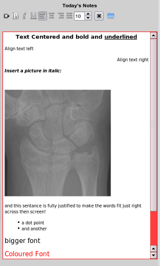
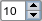
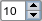

|  |
Editor Buttons The progress notes is a mini-html editor with some very basic features.
Note that the imageson your buttons may differ from these shown below:
 clears the contents of the editor with a popup warning.
make text bold
make text bold
make text bold
align text left
align text centre
align text right
justify text (space evenly across the line)
 increase or decrease font size
change the font color
load data from external file or image clears the contents of the editor with a popup warning.
make text bold
make text bold
make text bold
align text left
align text centre
align text right
justify text (space evenly across the line)
 increase or decrease font size
change the font color
load data from external file or image
|